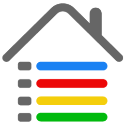

<footer class="docs-footer">
  <div class="docs-footer-list">
    <div class="docs-footer-logo">
      <div class="footer-logo">
        
        <span><a href="https://angular.io">政务审批系统</a></span>
      </div>
    </div>

    <div class="docs-footer-version">
      
      <span class="version">版本: {{version}}</span>
    </div>

    <div class="docs-footer-copyright">
      <div>
        <span>Powered by Feipu ©2010-2020.</span>
        <a>Shenyang Feipu Technology Co., Ltd</a>
        <span>Documentation licensed under CC BY 4.0.</span>
      </div>
    </div>
  </div>
</footer>
